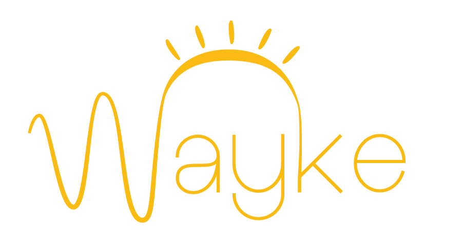

Find yourself dozing? Wayke will notify you when to take a break or even help you stay alert in a pinch. We offer an unparalleled solution to lost productivity due to drowsiness. Whether you find yourself driving great distances to attend Hackathons, piloting a Boeing 747, operating a crane, or simply studying for your next midterm, Wayke can help you stay focused.
Be sure to look out for our planned machine learning backend integration for actionable insights based on your daily activity.
Wayke can give you a buzz when you find yourself drifting off. We carefully measure your alpha and beta brainwaves to see when you are losing your focus.

Over the 36 hours we spent working on Wayke we have produced all brainwaves known to exist. It is at QHacks where we made a great hack with great people.

With Muse, Android, Arduinos, Grove, Web, and Cylon.js we have the whole stack. Not to mention some killer graphics, designs, and UI.